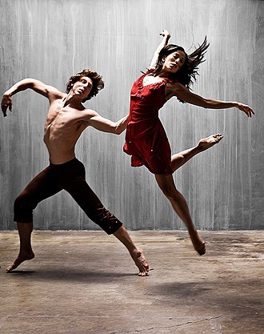

La Danza
Origen de la danza
Se encontraron registros pictóricos de la danza en todas las épocas y en los distintos continentes, si bien a través del curso del tiempo se fue modificando su forma, su sentido y significado.
En la prehistoria se bailaba al compás de los sonidos de la naturaleza, que más tarde fueron acompañados por las palmas, el choque de los pies o de bastones, que luego se vieron evolucionados en instrumentos musicales. Por último, se incorporó la voz. Estas danzas primitivas eran pasionales y espontáneas, buscaban expresar sentimientos y estados de ánimo.
Las grandes civilizaciones de la antigüedad, como Roma, Egipto y Grecia, utilizaron la danza en rituales: defunciones, bodas, recibimientos, danzas a las divinidades, entre otros.
(Fuente: https://concepto.de/danza/)
Div dentro de article
Galeria
La danza y la música
Muchas maneras tempranas de la música y la danza se han creado y realizado en conjunto. Este desarrollo ha continuado vinculado a través del tiempo con las formas de danza/música, tales como: vals, tango, disco, salsa, electrónica, Rap y hip-hop. Algunos géneros musicales tienen una forma de danza en paralelo, como la música barroca y danza barroca; mientras que otros, como la música clásica y ballet clásico, se han desarrollado por separado.
Aunque la danza es acompañada a menudo por la música, también pueden ser presentada de forma independiente o proporcionar su propio acompañamiento (claqué). El género de música utilizada en la danza no necesariamente llevará el mismo estilo; la danza puede llevarse a cabo sin la música, el bailarín se moverá con su propio ritmo o con el sugerido por el coreógrafo.
Ritmo
El ritmo y la danza están profundamente vinculados en la historia y la práctica. El bailarín estadounidense Ted Shawn escribió; "La concepción del ritmo que subyace a todos los estudios de la danza es algo de lo que podríamos hablar para siempre, sin agotar el tema". 2 Un ritmo musical requiere dos elementos principales; primero, un pulso que se repite regularmente (también llamado "tiempo" o "tactus") que establece el tempo y, segundo, un patrón de acentuación y silencios que establece el carácter del compás o patrón rítmico básico. El pulso básico tiene aproximadamente la misma duración que un simple paso o gesto.

Tipos de danza
Las definiciones que constituyen a la danza dependen de factores sociales, culturales, estéticos, artísticos y morales; así como también del rango de movimiento funcional hasta las técnicas virtuosas.
Cada danza, independientemente del estilo, tiene algo en común: implica tener flexibilidad y movimiento del cuerpo, así como buena condición física. Existieron muchos tipos de bailes y géneros de danza, generalmente se clasifica a estos en tres grandes grupos:
- Las danzas populares o folclóricas. Son las que se basan en la transmisión de la cultura tradicional.
- Las danzas clásicas. Son producto heredado de tiempos antiguos, principalmente en el periodo clásico de la antigüedad medieval, pero que ha sufrido cambios a través del tiempo hasta llegar a nuestros días, como el ballet.
- Las danzas modernas. Son practicadas generalmente por jóvenes y conllevan todo un tipo de identidad social a través de la forma de entender la vida e incluso de vestir: como el Funky, break dance, el rock and roll.